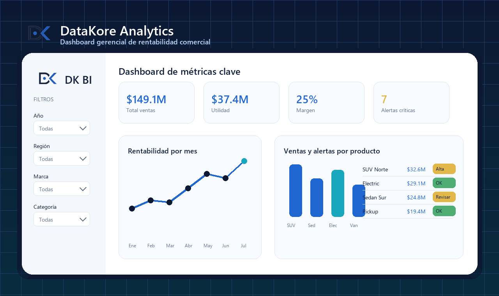

Análisis de datos
Tu empresa deja de adivinar y empieza a decidir con tableros gerenciales.
Centralizamos tus datos, automatizamos reportes y creamos visuales ejecutivos para detectar oportunidades, riesgos y rentabilidad en tiempo real.
Analítica que transforma
Pasas de hojas dispersas a un centro de control gerencial con KPIs, filtros, alertas y tendencias que ayudan a actuar antes que la competencia.
